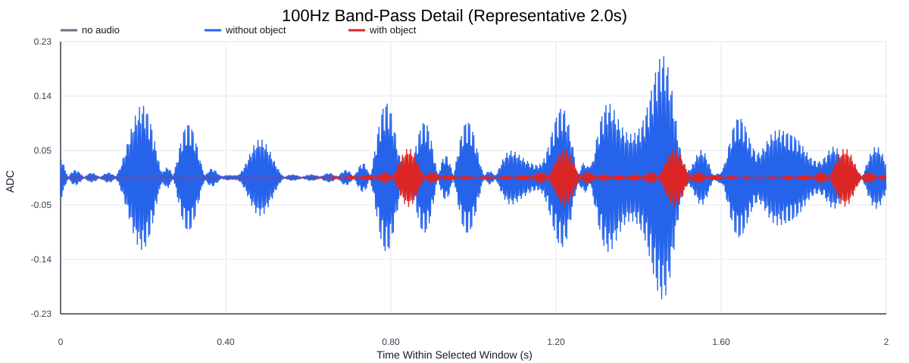
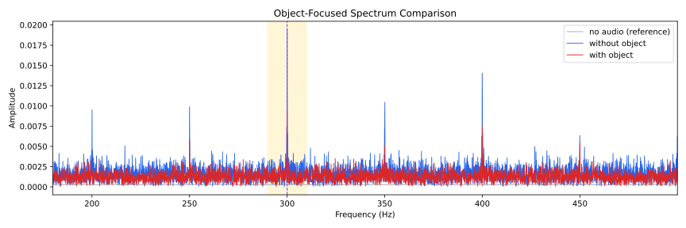
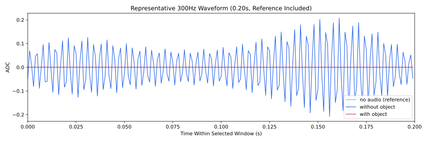
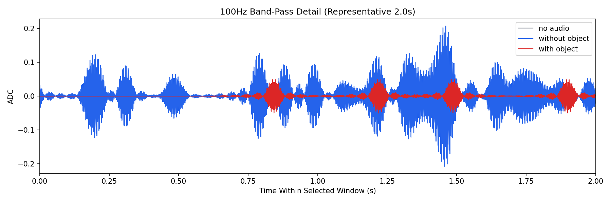
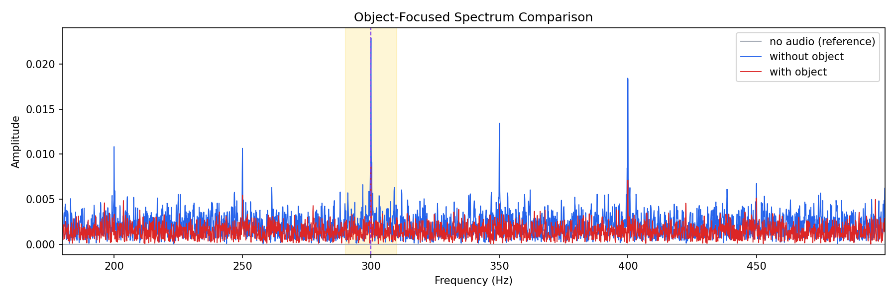
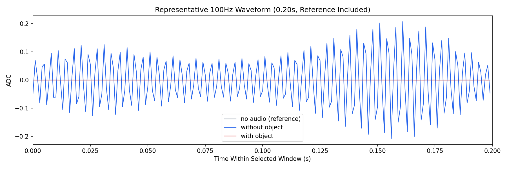

Background: F:\项目类文件夹\异物检测4.10\Data_Dual\frequency_sweep\0300Hz\repeat_04\raw\no_audio.csv
Without object: F:\项目类文件夹\异物检测4.10\Data_Dual\frequency_sweep\0300Hz\repeat_04\raw\without_object.csv
With object: F:\项目类文件夹\异物检测4.10\Data_Dual\frequency_sweep\0300Hz\repeat_04\raw\with_object.csv
| Metric | 无音频 | 100Hz无异物 | 100Hz有异物 | 无异物/无音频 | 有异物/无异物 | 有异物/无音频 |
|---|---|---|---|---|---|---|
| centered_rms | 0.011857 | 0.104638 | 0.071578 | 8.8250 | 0.6841 | 6.0368 |
| raw_target_amp | 0.000000 | 0.022876 | 0.008680 | 2083593.8642 | 0.3794 | 790585.0351 |
| filtered_rms | 0.002584 | 0.028181 | 0.017263 | 10.9046 | 0.6126 | 6.6800 |
| filtered_target_amp | 0.000000 | 0.022876 | 0.008680 | 2091388.1754 | 0.3794 | 793542.4583 |
| filtered_energy_ratio | 0.047507 | 0.072534 | 0.058169 | 1.5268 | 0.8020 | 1.2244 |
| window_filtered_target_amp_mean | 0.000107 | 0.021482 | 0.010225 | 200.7903 | 0.4760 | 95.5757 |
| window_filtered_target_amp_std | 0.000630 | 0.019132 | 0.010581 | 30.3775 | 0.5531 | 16.8005 |





